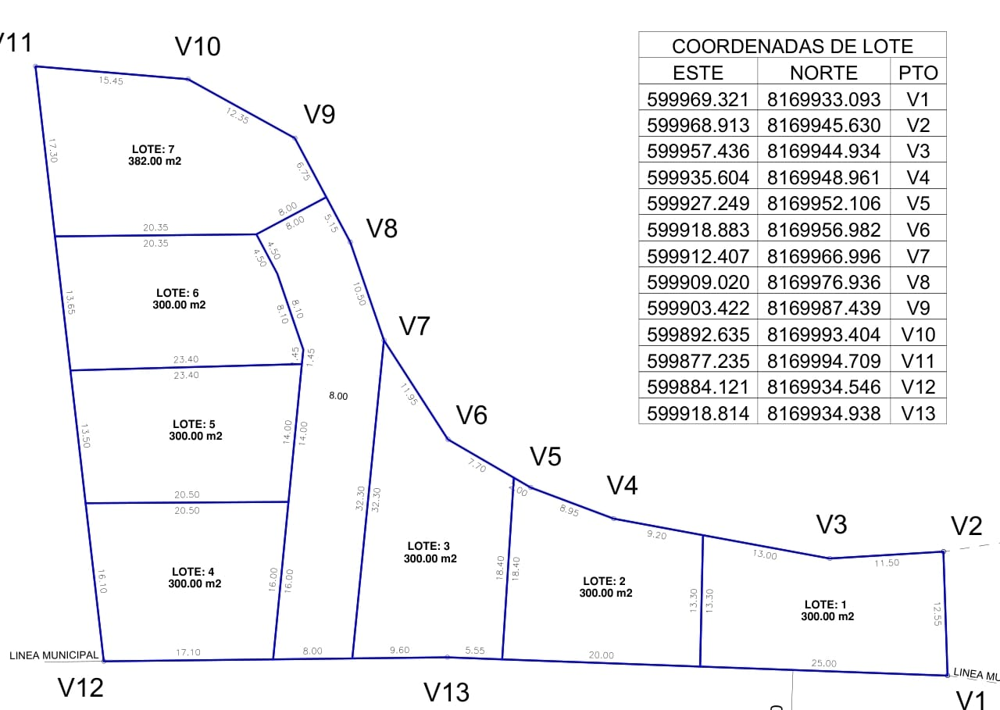

Proyecto Santa Rita
Plano y disponibilidad de lotes.
Revisa la distribución de los siete lotes y consulta por aquellos que continúan disponibles.
Estado actualizado
Encuentra el espacio que se adapta a tu proyecto.
Disponible Vendido

LOTE: 3
350.00 m²
350.00 m²
VENDIDO
VENDIDO
Las anotaciones de disponibilidad y superficie del lote 3 son informativas. La documentación y el contrato aplicable prevalecen para cualquier operación.
Disponibilidad
Los 7 lotes del proyecto
¿Te interesa un lote?